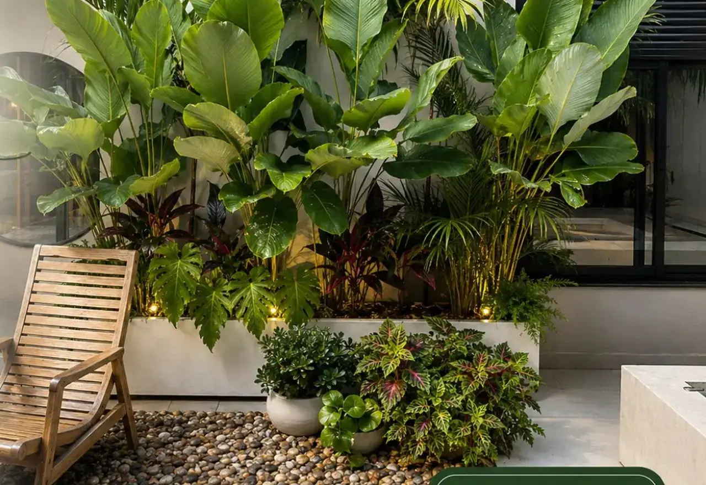
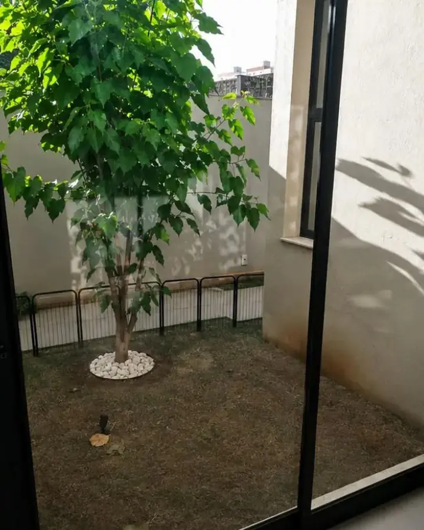
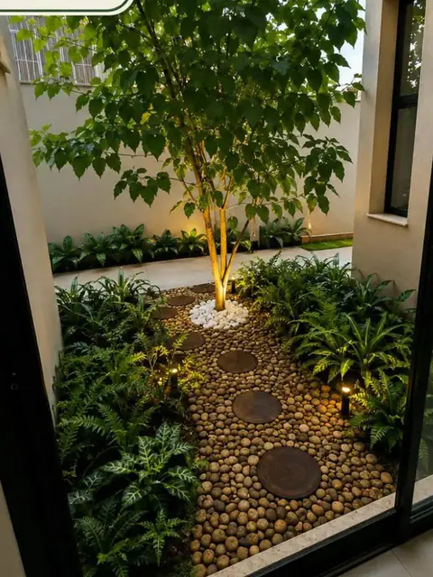
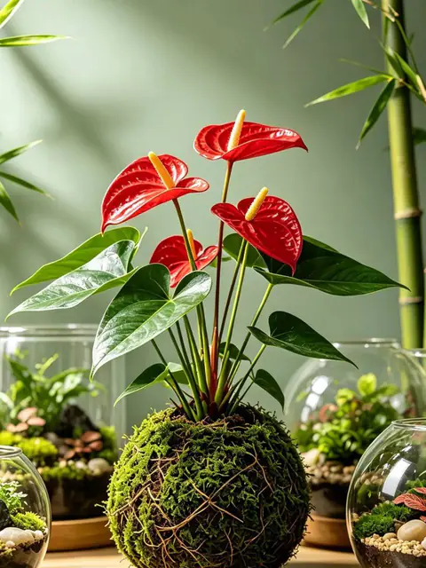
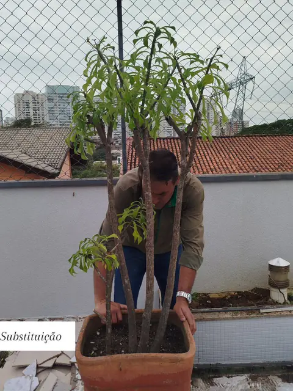
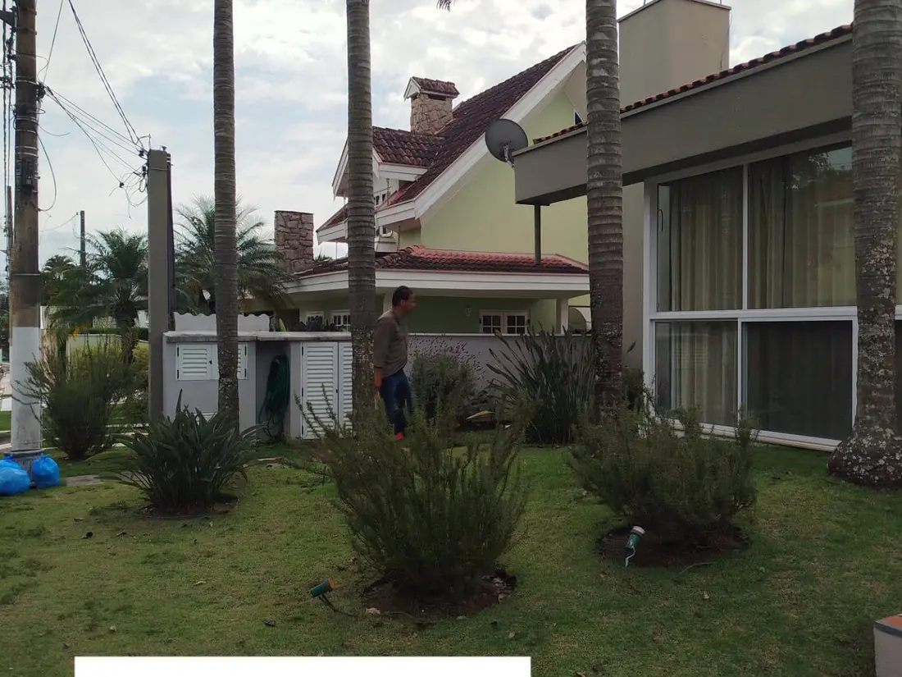
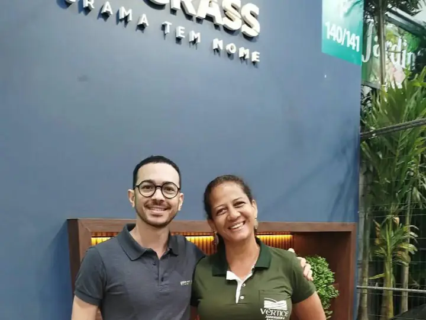
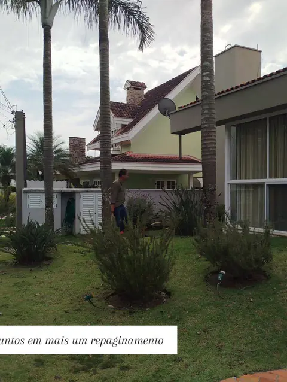
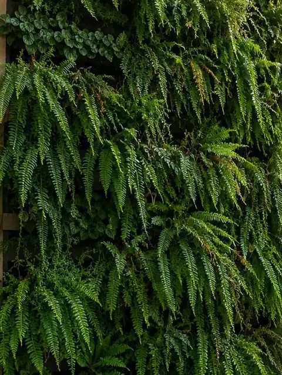
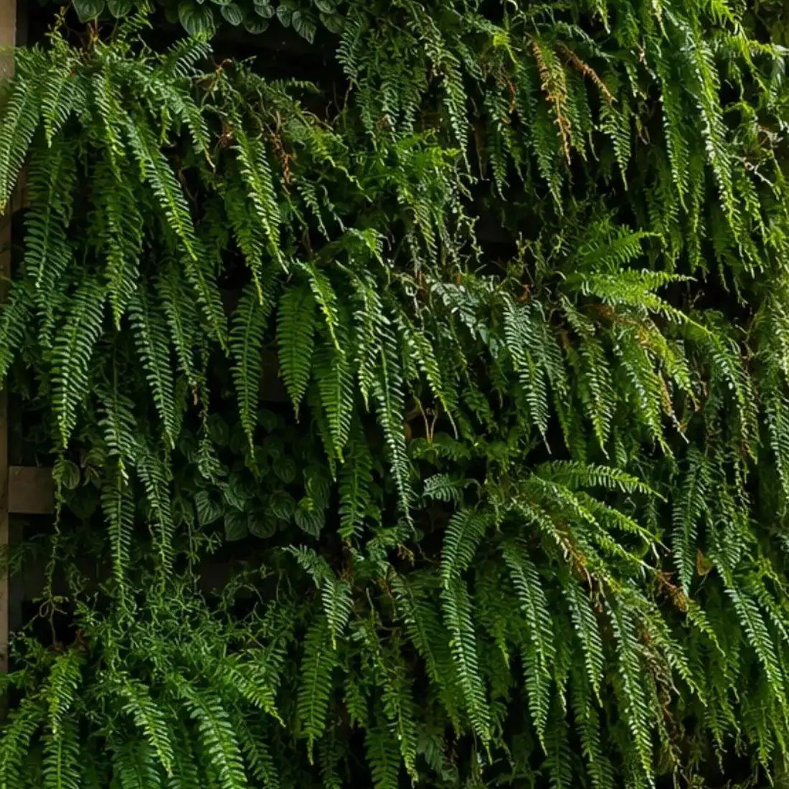

Projeto de Paisagismo
Projeto exclusivo para o seu espaço: conceito, distribuição de canteiros, lista de espécies, iluminação e acabamentos.
- Levantamento
- Lista de espécies
- Orçamento fechado

São Paulo e região · Uberlândia e região
Projeto exclusivo, execução com equipe própria e manutenção contínua. A Vértice cuida do seu espaço do primeiro croqui à última poda — para você só aproveitar.
Por que a Vértice
A maior parte dos jardins fracassa por três motivos: espécie errada, solo mal preparado e ausência de manutenção. Nós resolvemos os três — na mesma contratação.
Plantei e morreu tudo em dois meses.
Selecionamos espécies pela insolação, clima e solo reais do seu terreno, com preparo e correção antes do primeiro plantio.
Contratei e sumiram no meio da obra.
Equipe própria e cronograma definido. Você acompanha cada etapa e sabe exatamente quando termina.
Ficou lindo e virou mato em 3 meses.
Planos de manutenção programada com poda, adubação e limpeza — o jardim continua igual ao dia da entrega.
Meu espaço é pequeno demais.
Jardins verticais, árvores em vaso, kokedamas e terrários. Verde de verdade em varanda, hall ou corredor.
Serviços
Você pode contratar uma etapa ou o pacote completo. A maioria dos clientes começa pelo projeto e permanece na manutenção.
Projeto exclusivo para o seu espaço: conceito, distribuição de canteiros, lista de espécies, iluminação e acabamentos.
Preparo e correção de solo, drenagem, irrigação, plantio e acabamento. Executamos o que projetamos — sem terceirizar a mão de obra.
Visitas programadas com poda técnica, adubação, controle fitossanitário, replantio pontual e limpeza. Contrato mensal ou avulso.
Verde onde não existe chão. Painéis naturais ou preservados para fachadas, muros, halls e ambientes internos.
Formação, troca e recuperação de gramado com nivelamento e preparo de base — para o tapete ficar uniforme e durar.
Árvores adaptadas em vaso — jabuticabeira, oliveira, caliandra, hibisco trançado — além de kokedamas e terrários sob encomenda.
Antes & depois
Paisagismo é o investimento que mais devolve percepção de valor por real aplicado. Arraste para ver uma transformação real executada pela Vértice.

 Antes
Depois
Antes
Depois
Projetos realizados
Uma seleção de jardins, canteiros e áreas externas executados pela nossa equipe. Clique para ampliar.





Quem está por trás
A Vértice não é um catálogo de fotos bonitas. É uma operação de campo com equipe própria, presença no setor e projetos entregues em duas regiões.

Mais de uma década criando, executando e mantendo jardins residenciais, condominiais e corporativos.
Atendimento em São Paulo e região e em Uberlândia e região, com equipe deslocada para a obra.
Presença confirmada na 1ª ExpoGarden — Congresso Paisagismo Para Todos, em Holambra/SP, 17 a 19 de outubro.
Empresa executora do plantio da Missão “De Olho nas Árvores” com a Comissão de Meio Ambiente da OAB-SJC e escolas estaduais.
Como funciona
Sem burocracia e sem surpresa no valor. O orçamento sai com escopo, prazo e lista de espécies — por escrito.
Você conta o que precisa e manda uma foto do espaço. Em minutos entendemos o porte do trabalho e a faixa de investimento.
Vamos ao local medir, avaliar insolação, solo e drenagem, e entender como a família ou a empresa usa o espaço.
Você recebe o conceito, a lista de espécies, o prazo e o valor fechado. Ajustamos até fazer sentido para você.
Equipe própria executa dentro do cronograma. Na entrega, você escolhe o plano de manutenção que mantém tudo assim.
Para quem trabalhamos

Jardins de entrada, área de piscina, quintal e varanda — com manutenção que cabe na rotina.

Áreas comuns, portaria e praças. Contrato mensal, relatório de visita e previsibilidade de custo.

Fachada, recepção e áreas de convivência. O verde que comunica cuidado antes de qualquer discurso.

Grandes áreas, arborização, pomar ornamental e recuperação de gramado.
Projeto, execução e manutenção com equipe deslocada para a obra.
Mesma equipe, mesmo padrão de projeto e de acabamento.
Dúvidas frequentes
Orçamento sem compromisso

Vamos começar
Mande uma foto do seu jardim, quintal, varanda ou área comum. Em poucos minutos te dizemos o que dá para fazer — e quanto custa.